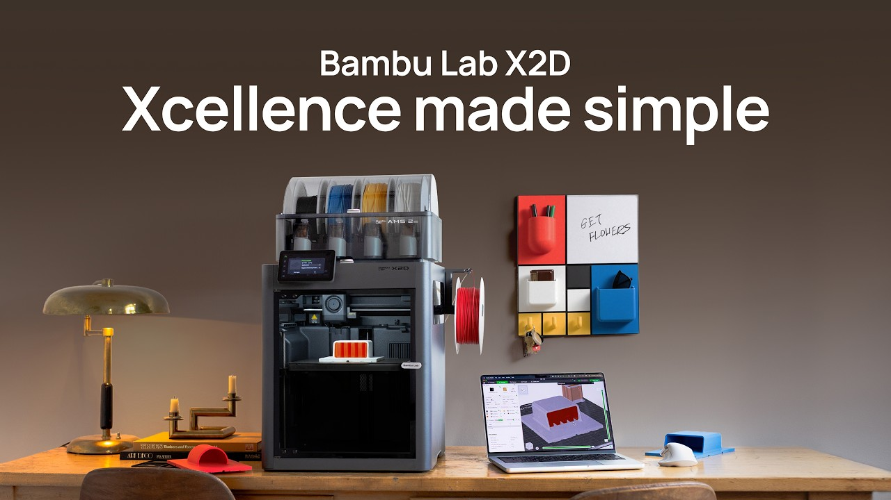

Build Volume: 256 × 256 × 260 mm
Core Features:
• Dual Nozzle System — main nozzle for model + auxiliary nozzle for support
• Easy peel-away supports for clean finish
• Actively heated chamber (up to 65°C) — great for ABS, ASA, Nylon, PC
• Servo extruder with real-time monitoring
• Advanced multi-color capability (up to 25 colors with AMS)
• Quick-swap nozzles and improved flow control
• Enhanced camera + AI failure detection
• Heated bed up to 100°C | Hotend up to 300°C
• Full auto calibration and advanced motion control
• Affordable dual-extruder solution with pro features